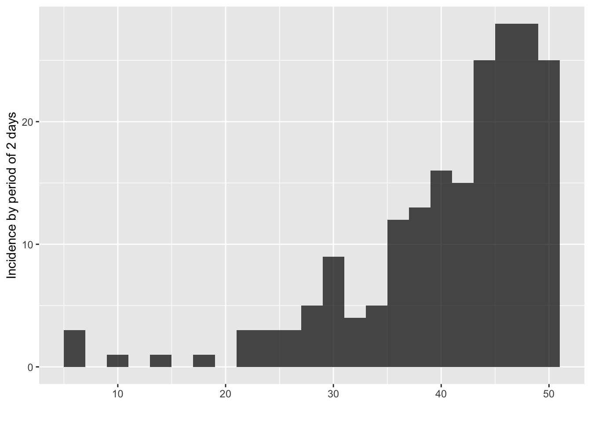
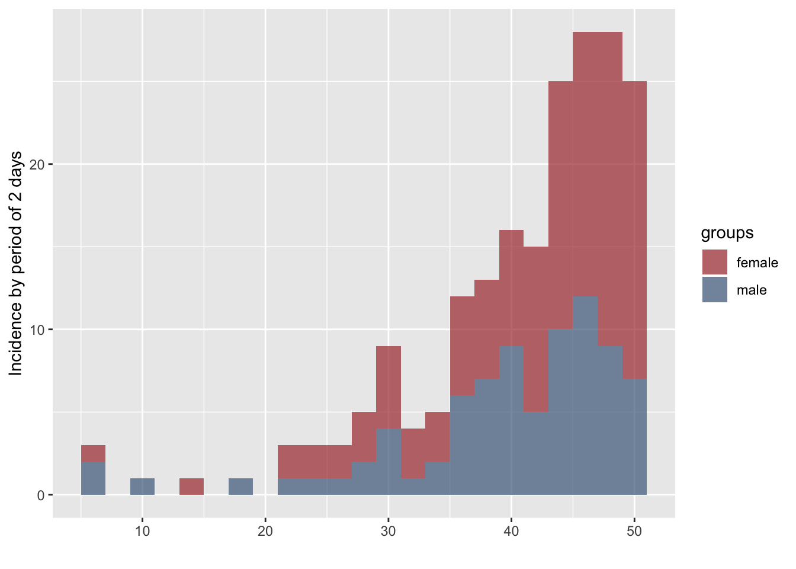

incidence_class.RmdThis vignette details the structure of incidence objects, as produced by the incidence function.
We generate a toy dataset of dates to examine the content of incidence objects.
library(incidence)
set.seed(1)
dat <- sample(1:50, 200, replace = TRUE, prob = 1 + exp(1:50 * 0.1))
sex <- sample(c("female", "male"), 200, replace = TRUE)The incidence by 48h period is computed as:
i <- incidence(dat, interval = 2)
i
#> <incidence object>
#> [200 cases from days 5 to 49]
#>
#> $counts: matrix with 23 rows and 1 columns
#> $n: 200 cases in total
#> $dates: 23 dates marking the left-side of bins
#> $interval: 2 days
#> $timespan: 45 days
#> $cumulative: FALSE
plot(i)
We also compute incidence by gender:
i.sex <- incidence(dat, interval = 2, group = sex)
i.sex
#> <incidence object>
#> [200 cases from days 5 to 49]
#> [2 groups: female, male]
#>
#> $counts: matrix with 23 rows and 2 columns
#> $n: 200 cases in total
#> $dates: 23 dates marking the left-side of bins
#> $interval: 2 days
#> $timespan: 45 days
#> $cumulative: FALSE
plot(i.sex)
The object i is a list with the class incidence:
class(i)
#> [1] "incidence"
is.list(i)
#> [1] TRUE
names(i)
#> [1] "dates" "counts" "timespan" "interval" "n"
#> [6] "cumulative"Items in i can be accessed using the same indexing as any lists, but it’s safer to use the accessors for each item:
In the following sections, we examine each of the components of the object.
$dates
The $dates component contains a vector for all the dates for which incidence have been computed, in the format of the input dataset (e.g. Date, numeric, integer).
date_bins <- get_dates(i)
class(date_bins)
#> [1] "integer"
class(dat)
#> [1] "integer"
date_bins
#> [1] 5 7 9 11 13 15 17 19 21 23 25 27 29 31 33 35 37 39 41 43 45 47 49The dates correspond to the lower bounds of the time intervals used as bins for the incidence. Bins always include the lower bound and exclude the upper bound. In the example provided above, this means that the first bin counts events that happened at day 5-6, the second bin counts events from 7-8, etc.
Note that if we had actual Date-class dates, they would be returned as dates
dat_Date <- as.Date("2018-10-31") + dat
head(dat_Date)
#> [1] "2018-12-17" "2018-12-16" "2018-12-12" "2018-11-26" "2018-12-18"
#> [6] "2018-11-27"
i.date <- incidence(dat_Date, interval = 2, group = sex)
i.date
#> <incidence object>
#> [200 cases from days 2018-11-05 to 2018-12-19]
#> [2 groups: female, male]
#>
#> $counts: matrix with 23 rows and 2 columns
#> $n: 200 cases in total
#> $dates: 23 dates marking the left-side of bins
#> $interval: 2 days
#> $timespan: 45 days
#> $cumulative: FALSE
get_dates(i.date)
#> [1] "2018-11-05" "2018-11-07" "2018-11-09" "2018-11-11" "2018-11-13"
#> [6] "2018-11-15" "2018-11-17" "2018-11-19" "2018-11-21" "2018-11-23"
#> [11] "2018-11-25" "2018-11-27" "2018-11-29" "2018-12-01" "2018-12-03"
#> [16] "2018-12-05" "2018-12-07" "2018-12-09" "2018-12-11" "2018-12-13"
#> [21] "2018-12-15" "2018-12-17" "2018-12-19"
class(get_dates(i.date))
#> [1] "Date"These can be converted to integers, counting the number of days from the first date.
get_dates(i.date, count_days = TRUE)
#> [1] 0 2 4 6 8 10 12 14 16 18 20 22 24 26 28 30 32 34 36 38 40 42 44
get_dates(i, count_days = TRUE)
#> [1] 0 2 4 6 8 10 12 14 16 18 20 22 24 26 28 30 32 34 36 38 40 42 44To facilitate modelling, it’s also possible to get the center of the interval by using the position = "center" argument:
get_dates(i.date, position = "center")
#> [1] "2018-11-06" "2018-11-08" "2018-11-10" "2018-11-12" "2018-11-14"
#> [6] "2018-11-16" "2018-11-18" "2018-11-20" "2018-11-22" "2018-11-24"
#> [11] "2018-11-26" "2018-11-28" "2018-11-30" "2018-12-02" "2018-12-04"
#> [16] "2018-12-06" "2018-12-08" "2018-12-10" "2018-12-12" "2018-12-14"
#> [21] "2018-12-16" "2018-12-18" "2018-12-20"
get_dates(i.date, position = "center", count_days = TRUE)
#> [1] 1 3 5 7 9 11 13 15 17 19 21 23 25 27 29 31 33 35 37 39 41 43 45$counts
The $counts component contains the actual incidence, i.e. counts of events for the defined bins. It is a matrix of integers where rows correspond to time intervals, with one column for each group for which incidence is computed (a single, unnamed column if no groups were provided). If groups were provided, columns are named after the groups. We illustrate the difference comparing the two objects i and i.sex:
counts <- get_counts(i)
class(counts)
#> [1] "matrix"
storage.mode(counts)
#> [1] "integer"
counts
#> [,1]
#> [1,] 3
#> [2,] 0
#> [3,] 1
#> [4,] 0
#> [5,] 1
#> [6,] 0
#> [7,] 1
#> [8,] 0
#> [9,] 3
#> [10,] 3
#> [11,] 3
#> [12,] 5
#> [13,] 9
#> [14,] 4
#> [15,] 5
#> [16,] 12
#> [17,] 13
#> [18,] 16
#> [19,] 15
#> [20,] 25
#> [21,] 28
#> [22,] 28
#> [23,] 25
get_counts(i.sex)
#> female male
#> [1,] 1 2
#> [2,] 0 0
#> [3,] 0 1
#> [4,] 0 0
#> [5,] 1 0
#> [6,] 0 0
#> [7,] 0 1
#> [8,] 0 0
#> [9,] 2 1
#> [10,] 2 1
#> [11,] 2 1
#> [12,] 3 2
#> [13,] 5 4
#> [14,] 3 1
#> [15,] 3 2
#> [16,] 6 6
#> [17,] 6 7
#> [18,] 7 9
#> [19,] 10 5
#> [20,] 15 10
#> [21,] 16 12
#> [22,] 19 9
#> [23,] 18 7You can see the dimensions of the incidence object by using dim(), ncol(), and nrow(), which returns the dimensions of the counts matrix:
dim(get_counts(i.sex))
#> [1] 23 2
dim(i.sex)
#> [1] 23 2
nrow(i.sex) # number of date bins
#> [1] 23
ncol(i.sex) # number of groups
#> [1] 2There are also accessors for handling groups:
# Number of groups
ncol(i.sex)
#> [1] 2
ncol(i)
#> [1] 1
# Names of groups
group_names(i.sex)
#> [1] "female" "male"
group_names(i)
#> NULL
# You can also rename the groups
group_names(i.sex) <- c("F", "M")
group_names(i.sex)
#> [1] "F" "M"Note that a data.frame containing dates and counts can be obtained using as.data.frame:
## basic conversion
as.data.frame(i)
#> dates counts
#> 1 5 3
#> 2 7 0
#> 3 9 1
#> 4 11 0
#> 5 13 1
#> 6 15 0
#> 7 17 1
#> 8 19 0
#> 9 21 3
#> 10 23 3
#> 11 25 3
#> 12 27 5
#> 13 29 9
#> 14 31 4
#> 15 33 5
#> 16 35 12
#> 17 37 13
#> 18 39 16
#> 19 41 15
#> 20 43 25
#> 21 45 28
#> 22 47 28
#> 23 49 25
as.data.frame(i.sex)
#> dates F M
#> 1 5 1 2
#> 2 7 0 0
#> 3 9 0 1
#> 4 11 0 0
#> 5 13 1 0
#> 6 15 0 0
#> 7 17 0 1
#> 8 19 0 0
#> 9 21 2 1
#> 10 23 2 1
#> 11 25 2 1
#> 12 27 3 2
#> 13 29 5 4
#> 14 31 3 1
#> 15 33 3 2
#> 16 35 6 6
#> 17 37 6 7
#> 18 39 7 9
#> 19 41 10 5
#> 20 43 15 10
#> 21 45 16 12
#> 22 47 19 9
#> 23 49 18 7
## long format for ggplot2
as.data.frame(i.sex, long = TRUE)
#> dates counts groups
#> 1 5 1 F
#> 2 7 0 F
#> 3 9 0 F
#> 4 11 0 F
#> 5 13 1 F
#> 6 15 0 F
#> 7 17 0 F
#> 8 19 0 F
#> 9 21 2 F
#> 10 23 2 F
#> 11 25 2 F
#> 12 27 3 F
#> 13 29 5 F
#> 14 31 3 F
#> 15 33 3 F
#> 16 35 6 F
#> 17 37 6 F
#> 18 39 7 F
#> 19 41 10 F
#> 20 43 15 F
#> 21 45 16 F
#> 22 47 19 F
#> 23 49 18 F
#> 24 5 2 M
#> 25 7 0 M
#> 26 9 1 M
#> 27 11 0 M
#> 28 13 0 M
#> 29 15 0 M
#> 30 17 1 M
#> 31 19 0 M
#> 32 21 1 M
#> 33 23 1 M
#> 34 25 1 M
#> 35 27 2 M
#> 36 29 4 M
#> 37 31 1 M
#> 38 33 2 M
#> 39 35 6 M
#> 40 37 7 M
#> 41 39 9 M
#> 42 41 5 M
#> 43 43 10 M
#> 44 45 12 M
#> 45 47 9 M
#> 46 49 7 MNote that incidence has an argument called na_as_group which is TRUE by default, which will pool all missing groups into a separate group, in which case it will be a separate column in $counts.
$n
The $n component stores the total number of events in the data:
Note that to obtain the number of cases by groups, one can use:
$weeks
The $weeks component is optional, and used to store aweek objects whenever they have been used. Weeks are used by default when weekly incidence is computed from dates (see argument standard in ?incidence).
library(outbreaks)
dat <- ebola_sim$linelist$date_of_onset
i.7 <- incidence(dat, "1 epiweek", standard = TRUE)
i.7
#> <incidence object>
#> [5888 cases from days 2014-04-06 to 2015-04-26]
#> [5888 cases from MMWR weeks 2014-W15 to 2015-W17]
#>
#> $counts: matrix with 56 rows and 1 columns
#> $n: 5888 cases in total
#> $dates: 56 dates marking the left-side of bins
#> $interval: 1 week
#> $timespan: 386 days
#> $cumulative: FALSE
i.7$weeks
#> <aweek start: Sunday>
#> [1] "2014-W15" "2014-W16" "2014-W17" "2014-W18" "2014-W19" "2014-W20"
#> [7] "2014-W21" "2014-W22" "2014-W23" "2014-W24" "2014-W25" "2014-W26"
#> [13] "2014-W27" "2014-W28" "2014-W29" "2014-W30" "2014-W31" "2014-W32"
#> [19] "2014-W33" "2014-W34" "2014-W35" "2014-W36" "2014-W37" "2014-W38"
#> [25] "2014-W39" "2014-W40" "2014-W41" "2014-W42" "2014-W43" "2014-W44"
#> [31] "2014-W45" "2014-W46" "2014-W47" "2014-W48" "2014-W49" "2014-W50"
#> [37] "2014-W51" "2014-W52" "2014-W53" "2015-W01" "2015-W02" "2015-W03"
#> [43] "2015-W04" "2015-W05" "2015-W06" "2015-W07" "2015-W08" "2015-W09"
#> [49] "2015-W10" "2015-W11" "2015-W12" "2015-W13" "2015-W14" "2015-W15"
#> [55] "2015-W16" "2015-W17"Because $weeks is an optional element, it does not have a dedicated accessor. If the element is not present, attempting to access it will result in a NULL:
Both dates and weeks are returned when converting an incidence object to data.frame: